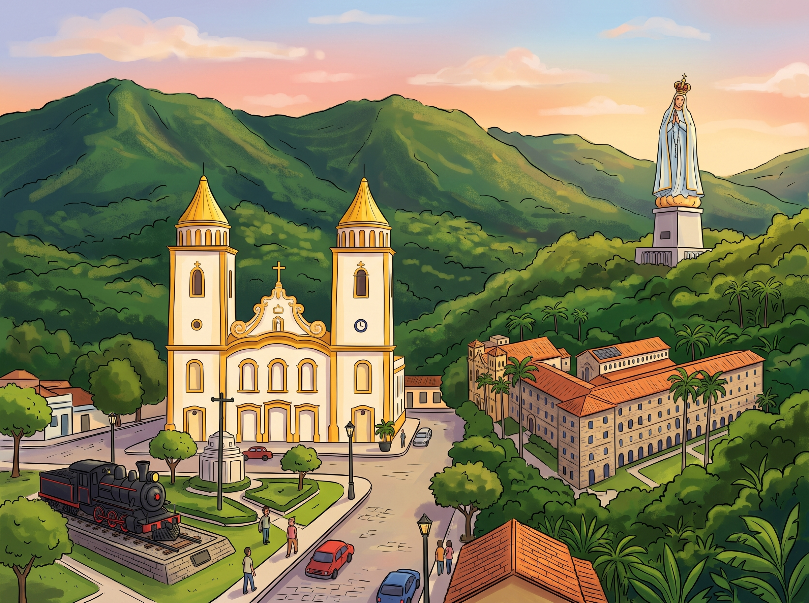

SOBRE A FEIRA DIGITAL
A feira muda de lugar, mas continua sendo ponto de encontro.
A Feira Digital aproxima quem produz de quem compra e ajuda a tradição da feira livre de Baturité a caber também na rotina de hoje.
Conheça os feirantesHistória da cidade
O nome Baturité tem origem indígena e está ligado à serra que marca a paisagem e a história da região. O município se formou a partir da Missão de Nossa Senhora da Palma, em 1755, tornou-se cidade em 1858 e viveu um importante ciclo do café no século XIX.
Em 1882, a Estação de Baturité foi inaugurada como parte da Estrada de Ferro de Baturité, conectando a produção local ao litoral. Essa relação entre trabalho, circulação e encontro continua presente na vida da cidade.
NOSSO PROPÓSITO
Mais visibilidade para quem vende. Mais clareza para quem compra.
Na plataforma, feirantes e pequenos produtores publicam produtos e fotos, informam preços e disponibilidade. Consumidores consultam o catálogo e fazem pedidos para combinar retirada e pagamento diretamente com quem vende.
A feira
A feira livre, realizada aos sábados, é reconhecida pela Prefeitura como um marco cultural de Baturité e reúne vendedores da cidade e de municípios próximos. É uma tradição de alimentos, roupas, artesanato, serviços e conversa — e não apenas de frutas e verduras.